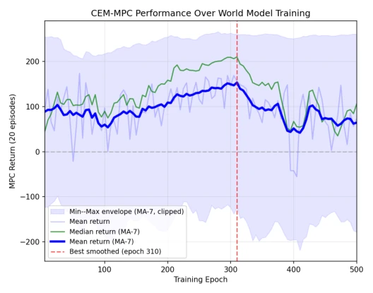
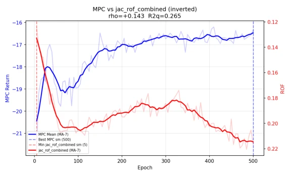
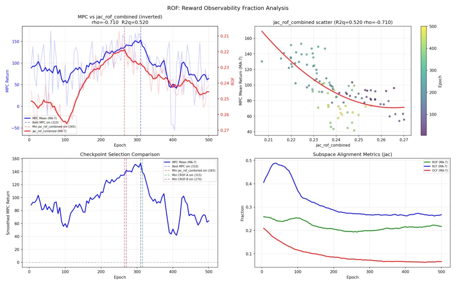
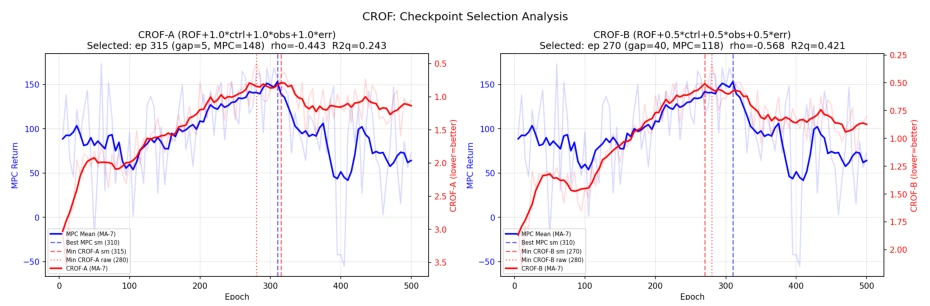
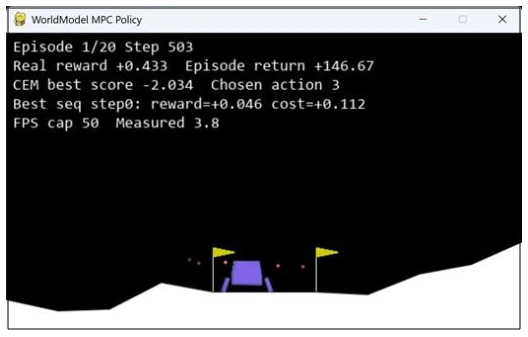
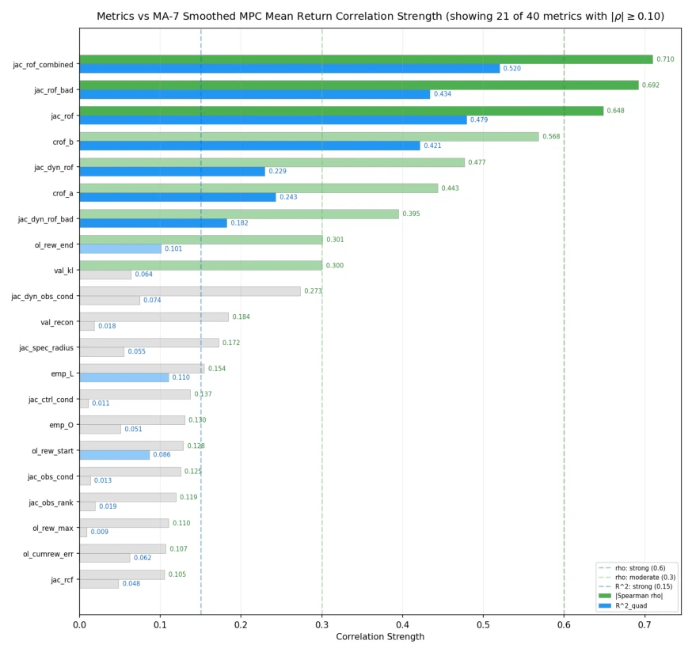
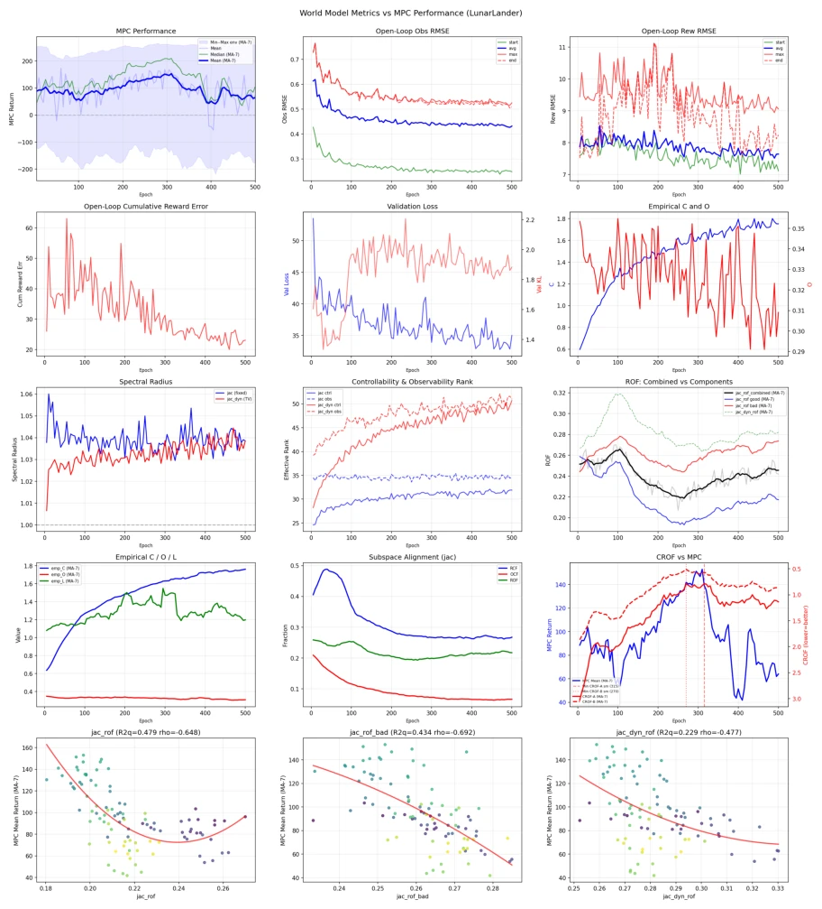

Predicting Closed-Loop Performance of Latent World Models: Offline Checkpoint Selection for MPC and Model-Based RL Under Non-Markovian Rewards in LunarLander
This paper prescribes a potent remedy for the chronic "overfitting" ailment of MBRL. The authors keenly point out that a decrease in validation loss does not imply a stronger policy, especially in non-Markovian reward environments like LunarLander, where models are prone to learning "illusions." Diagnosing world models using controllability/observability from control theory is quite hardcore, much more reliable than simply looking at RMSE. The CROF metric is indeed effective; offline selection can crush model-free baselines, with data efficiency improved by 65 times, which sounds very appealing. But the drawbacks are obvious: only one LunarLander was tested; although a Reacher comparison experiment was conducted, the conclusion was "this trick is useless under Markovian rewards," suggesting generalizability is questionable. If switching to a continuous action space or a more complex reward structure, can this Jacobian analysis still function? Don't let it turn into a "Lunar Rover-specific diagnostic tool".
The core pain point of Model-Based Reinforcement Learning (MBRL) is Objective Mismatch [8]: when training world models, prediction accuracy is optimized, but downstream tasks (such as MPC or policy optimization) require structured dynamic characteristics. Existing works such as Dreamer [4] or PETS [2] mostly rely on validation loss or RMSE to select models, but in environments like LunarLander with reward shaping and non-Markovian rewards, these metrics continue to decrease while closed-loop performance has already collapsed. The authors point out that standard metrics only capture statistical fitting, ignoring the geometric alignment between reward-related subspaces and control/observation subspaces. LunarLander-v3, because rewards depend on internal flags (such as landing status) rather than current observations, becomes an ideal proxy for testing this issue. Existing methods lack offline diagnostic tools, leading to models that are "accurate in prediction" but "cannot fly" in the later stages of training, urgently requiring a structured evaluation metric that does not rely on environment interaction.

Figure 2: CEM-MPC performance across 500 epochs of world-model training (20 test episodes per checkpoint; 140 pooled per MA-7 point). Bold/faint blue: MA-7-smoothed and raw mean. Green: MA-7-smoothed median. Light band: MA-7 min–max envelope (a few extreme points are clipped). The smoothed mean peaks near epoch 310 and collapses after epoch 380.

Figure 4: Reacher contrast. Smoothed MPC return (blue) and inverted jac rof combined (red) over training on a Gymnasium Reacher world model trained with the identical RSSM setup. Both curves rise nearly monotonically; there is no U-shape and no late-training collapse, and the rank correlation between the two (ρs = +0.143, R2 q = 0.265) is weak and of the opposite sign to Lu- narLander.
The overall process trains a world model based on the RSSM architecture [4], then calculates 40 structured metrics on the validation set to evaluate each Checkpoint. The core innovation lies in introducing control theory analysis: calculating Jacobian matrices for the transition function, decoder, and reward predictor, performing fixed or time-varying linearization. The key metric is the Reward Observability Fraction (ROF), measuring the energy proportion of the reward gradient in the observable subspace. Since ROF may be distorted in low training stages, the authors propose the Composite Reward Observability Fraction (CROF), combining ROF, controllability rank, observability rank, and open-loop observation error. Evaluation is divided into two parts: first, using CEM-MPC [11] for planning within the model to obtain closed-loop returns as an Oracle; second, training an imagination-based A2C policy [4]. CROF is used for offline screening of the best world model, requiring no additional environment interaction. Jacobian analysis reveals the essence of overfitting: although multi-step prediction error decreases, the reward-related subspace and observation subspace drift, causing imagination planning to fail.

Figure 3: ROF analysis. Top-left: smoothed MPC return (blue) vs. inverted jac rof combined (red), with vertical lines at the smoothed MPC peak (epoch 310) and the smoothed jac rof combined minimum (epoch 265). Top-right: per-checkpoint scatter with quadratic fit, exhibiting the characteristic U-shape (smoothed Spearman ρs= −0.71, R2 q=0.52). Bottom-left: checkpoint selection comparison — the MA-7-smoothed jac rof combined minimum and the MA- 7-smoothed CROF-A and CROF-B picks all sit inside or adjacent to the high-MPC plateau (raw minima in Table 2). Bottom-right: subspace alignment metrics (RCF, OCF, ROF) vs. epoch.

Figure 5: CROF composite score over training. Left: smoothed MPC return (blue) vs. smoothed CROF-A (red, lower-is-better axis inverted). Right: same for CROF-B. Vertical lines mark the smoothed MPC oracle (blue dashed, epoch 310), the MA-7-smoothed CROF minimum (red dashed: CROF-A at 315, CROF-B at 270), and the raw CROF minimum (red dotted: 280 for both variants); see Table 2.
Experiments were conducted on Gymnasium LunarLander-v3, using 872 human demonstration trajectories (180k steps) to train RSSM, saving 100 Checkpoints. Baselines include standard metrics such as minimum validation loss, minimum RMSE, etc. Results show that standard metrics continue to optimize in the later stages of training (epoch >380), but MPC returns have already collapsed; the model selected by CROF (epoch 280) outperforms Oracle selection on both MPC and A2C tasks. Compared to model-free A2C, the CROF-selected MBRL policy return is higher by about 24.5 points, and environment interaction is reduced by 65 times. Ablation studies show that using only ROF selects local optima, while CROF with structural regularization terms is more robust. Comparison with the Reacher task (Markovian rewards) proves that ROF is only effective under non-Markovian rewards, validating the applicability boundaries of the method.

Figure 1: LunarLander-v3: four discrete actions (NOP, left/main/right thruster), 8-D observation, soft-landing objective from a randomized initial state.

Figure 6: Per-metric correlations with smoothed (MA-7) MPC mean return for all 40 metrics in the suite of Section 3.4. Bars show Spearman ρs; colours mark the strong (|ρs| ≥0.30), moderate (0.10 ≤|ρs| < 0.30), and weak (|ρs| < 0.10) bands used throughout the paper. The ROF/CROF family dominates the strong-correlation block, while all standard training and one-step-prediction metrics (val loss, val recon, post * rmse, etc.) sit in the weak band. Numerical values for the most informative subset are listed in Table 1.

Figure 7: Metrics vs. MPC dashboard. Standard metrics (validation losses, open-loop RMSEs, empirical sensitivities, Jacobian spectral radius and ranks) are monotonic or flat through the late- training collapse; only the ROF family (third-row right panel) traces MPC’s rise–peak–collapse U-shape. Bottom row: scatter of the three core ROF sub-metrics against MA-7 MPC return with quadratic fits.